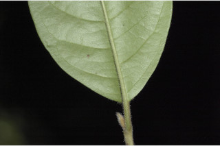
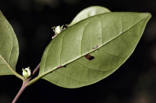
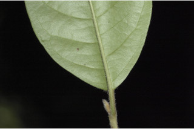
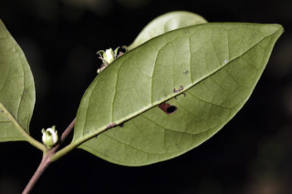

Images :


 




| Habit : | Large shrubs to small trees up to 5 m tall. |
| Leaves : | Leaves simple , opposite , decussate ; petiole 0.5-0.8 cm long, canaliculate , pubescent when young; lamina 7-14.5 x 2.7-5.5 cm, elliptic or elliptic-ovate , apex acuminate with blunt tip, base acute , margin entire , chartaceous , glabrous ; midrib canaliculate above; secondary_nerves 10-15 pairs, not prominent, joining as loop near margin; tertiary_nerves broadly reticulate . |
| Inflorescence / Flower : | Flowers white, sessile , axillary or lateral from the leafless axils, solitary or in pairs. |
| Fruit and Seed : | Berry , crowned with calyx lobes ; seed one. |